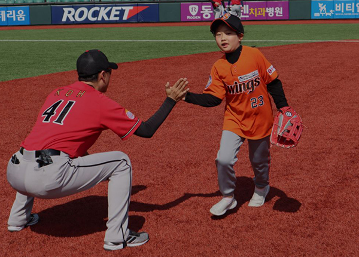
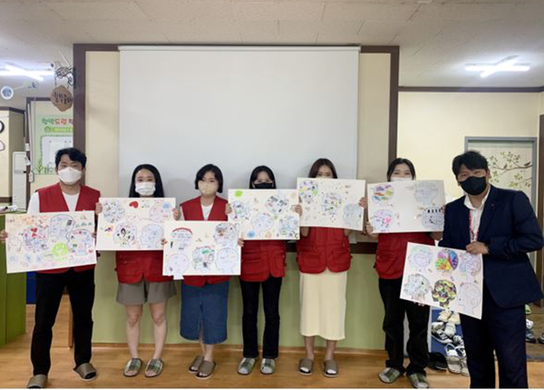

HOME > 경영방침 >
사회공헌
사회공헌
사람과 자연을 소중히 여기고,
맑고 깨끗한 세상을 만들어가는 롯데알미늄
글로벌 기업시민으로서 이해관계자들과의 상생을 도모하고, 사회적 가치창출에 이바지하여
오늘을 이롭게하는 것은 물론 지속가능한 미래를 실현하는데 앞장서겠습니다.
“ FINE TODAY, GREEN TOMORROW ”
사회공헌 추진 전략 슬로건.
-
- Dream
- 아동, 청소년, 여성
-
- Eco
- 지역환경, 사회
-
- Synergy
- 그룹 및 유관기관
-
- Industry
- 산업연계
사회공헌활동
롯데 알미늄은 아동·청소년 및 여성, 지역사회 및 환경, 화학산업, 그룹 및 유관기관 등
4대 중점 추진영역에 집중하여 체계적인 사회공헌 활동을 펼치고 있습니다.
-

- Dream
- 아동, 청소년, 여성
- 아동·청소년과 미혼모 가족의 꿈을 응원하고, 안정적인 삶을 영위하도록 다양한 지원 활동을 하고 있습니다.
-
다문화 리틀야구단 ‘스윙스’ 후원
주거 환경 개선 ‘러브 하우스’
지역아동센터 도서 기부
미혼모 지원 ‘핸즈온’ 봉사 활동
-
- Eco
- 지역환경, 사회
- 자연환경을 온전하게 보호하고 유지할 수 있도록 기후변화 대응 활동과 녹색환경 캠페인을 전개하고 있습니다.
-
도시농업 상자텃밭 캠페인
태화강 십리대숲 보전 활동
인천 해양 정화 활동
울산 여천천 정화 활동

-

- Synergy
- 그룹 및 유관기관
- 롯데 그룹사와 지자체, 지역의 사회공헌기관과 협력을 통해 상생과 나눔의 가치를 더하고 있습니다.
-
롯데 플레저 박스 캠페인
소방관 문화 행사 후원
mom편한 파인 트립
삼동복지재단 두드림 사업
-
- Industry
- 산업연계
- 미래 산업을 이끌어갈 인재 육성을 지원하고, 회사 제품과 기술이 접목된 나눔 활동을 통해 업(業)과 연계한 사회공헌 활동을 펼치고 있습니다.
-
UNIST 화학 전공자 대상 장학 사업
어린이 화학교실 후원
요소수 기부 사업